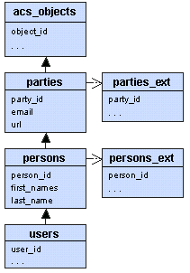

By Frank Bergmann and Juanjo Ruiz
DynField is an extension of the original OpenACS SQL Metadata system. DynField allows developers to extend objects with new fields. These new fields will appear automatically on all suitable OpenACS pages that deal with this object such as the object's view-, edit and list pages.
DynField is an _extension_ mechanism which allows adding dynamic attributes to existing OpenACS objects. However, DynField is not a generic object management system. The creation and deleting of objects are outside of the scope of DynField, because is functionality is frequently handled using PL/SQL or PG/SQL in an object specific way.
DynField is based on code of the great Attribute Management System (AMS) from Matthew Geddard and Richard Hamilton. Also, this document is based on their documentation.
The main purpose of DynField is to allow developers to customize the system for specific web sites or customers without modifying the underlying TCL and ADP source code in the CVS version control system.
Please see the initial posting at OpenACS for an overview over design decisions and requirements. Basically, we tried to keep the system as simple as possible (it only defines two new tables) and to stick as much as possible to the original OpenACS Metadata system. Also check the enclosed PowerPoint slides.
The architecture consists of an extension table to acs_attributes and one new table containing preconfigured "widgets":
acs_attributes already contains the link to OpenACS objects via the object_type field, so dynfield_attributes is basically an extension table that links to dynfield_widgets.
 DynField comes with several maintenance screens that allow to define new attributes for a given object type. There are two options:
The figure to the right shows a typical setting for the object type "User". "User" information is generally stored in the "users" table. However, part of the information is stored in the superclasses of "User" such as "Person", "Party" and "Object".
As a consequence we will have to gather information from all of these "extension tables" when displaying a "User" and we will have to save information to all of these tables when modifying a user. The management of these extension tables can be very difficult in practice, because there can be any number of database constraints related to these extension tables, and some of the extension tables may require a creation using a PL/SQL or PG/SQL database procedure.
This is the reason why we decided NOT to support a generic object creation functionality in DynField. Instead, DynField restricts itself to modifying existing objects, which can be mapped into SQL "update" statements for the extension tables. Even with these restrictions it is possible that a DynField "update" will violate database constraints. However, the probability is much lower in general.
The most important information of an attribute is defined via its "Widget". This widget includes the definition of:
In short, the widget defines the semantics of an attribute. Widgets are explained further below.
You have two options when dealing with DynField and ad_form. Shorthand and detailed.
Shorthands is a completely simple way of creating forms without many options. The supplied object_id must already exist in the acs_object table. The shorthand procs is dynfield_form, which is simply a wrapper for ad_form. For example, to create and ad_form named "contact_person_ae" create a page contacts/www/contact-person-ae.tcl with the following content:
ad_page_contract {
} {
{ct_contact_id:integer,notnull}
}
set title "Contact Person Add/Edit"
set context [list $title]
dynfield_form -package_key "contacts" \
-object_type "ct_contact" \
-page_name "edit_page" \
-form_name "contact_person_ae" \
-object_id $ct_contact_id \
-return_url ""
ad_return_template
The positioning of the form elements on the screen is defined with the attributes themselves. Please see the DynField "layout manager" for details.
The contacts/www/contact-person-ae.adp would contain:
<master> <property name="title">@title@</property"> <property name="context">@context@</property"> <formtemplate id="contact_person_ae"> </formtemplate">
That's it. If this isn't flexible enough you can also go with the detailed method.
For many application the DynField and ad_form shorthand will be too simplistic. For those situations, you can use DynField to interface with ad_form. You need to define ad_from -form elements like this:
ad_form ... -form [dynfield::ad_form::elements \ -package_key "contacts" \ -object_type "ct_contact" \ -list_name "contact_person"] ...
Note that this procedure returns an ad form appropriate element list. If you
intending to define other elements you will need to ad_from -extend -name
form_name -form ...
In the ad_form -edit_request block put
ad_form ... -edit_request {
dynfield::object::attribute::values -vars -object_id $object_id
} ...
This returns the variables upvared into your page, i.e. the first_names attribute could be returned with a value of "Jane" and the last_name attribute with a value of "Doe"... etc. ad_from looks for all form elements and appropriately pre-fills the form with the given values.
In the -on_submit block you enter the following:
ad_from ... -on_submit {
dynfield::ad_form::save \
-package_key "contacts" \
-object_type "ct_contact" \
-list_name "contact_person" \
-form_name "contact_person_ae" \
-object_id $ct_contact_id
}
This is how you interface with DynField and ad_form. You may also specify other code in the -form -on_submit and -on_submit blocks.
To display attributes you can call dynfield::object::attribute::values to get the results back as upvared variables, as an array or as a list however you want. So, if on the contact-view page you do, for example to get an array with all attribute_values that are not null represented in.
dynfield::object::attribute::values -array "contact_info" -object_id $ct_contact_id
To add dynfield_attribute_values to a multirow you call dynfield::multirow::extend to efficiently extend your multirow with dynfield_attribute_values. For example:
db_multirow contacts get_contacts { select ct_contact_id from ct_contacts }
dynfield::multirow::extend \
-package_key "contacts" \
-object_type "ct_contact" \
-list_name "contact_person" \
-multirow "contacts" \
-key "ct_contact_id"
ToDo ...
DynField defines the notion of a "page", allowing attributes to be layouted differently in different TCL/ADP pages. Each page defines the position for each attribute. There are three different types of layout defined in DynField, for each type there are specific actions to be taken, but in all of them you can specify which attributes you want to show and which not. This combined with the Cascade Style Sheets and the style option in the <formtemplate> ACS templating tag gives a wide variety of formating options.
Hint: The layout management makes heavy use of the acs-templating and template::form systems, if you do not feel comfortable with it, please revise the corresponding documentation.
The "Absolute positioning" uses DIV classes for each label/widget pair. Once the classes are defined is up to the CSS to move each field to the desired place. The use of DIV tags complies with European Accessability regulations.
The "Relative positioning" uses the same principle as the <grid> tag of the ACS template system in order to emulate a table-like structure.
First we define the height and the width of the desired table and after that we sort all the included attributes. The table-builder will use this sort order and the width (x) of the table, so the first (x) elements will be placed in the first rown, the second ones in the second rown, and so on as you can see in the next table example:
| 1st | 2nd | 3rd |
| 4th | 5th | 6th |
| 7th | 8th | ... |
"ADP template" has all the posible freedom because you are editing line by line how you want your form to look like. For the people who has already embebed some dynamic form in a template it should be pretty straight forward as they are used to use the different <form[...]> tags. The dynfield package just adds two new tags to the existent ones which we think are very usefull:
The dynfield package is just an extension of what we already have in our page. So you can add fields to pages without form, pages defining the form in the adp file or pages using template::form/ad_form. The drawback of this implementation is that one can get confuse about what is really being executed at one moment and which what values. The standard process shall be the following:
The layout pages are defined in the table dynfield_layout_pages:
The dynfield_layout table define the attributes showed in each page
... For further reference please look the documentation in the dynfield procedures.
The following section explains the different choices for a widget in detail:
The storage type determines how the value of the widget is stored in the database. There are several options:
The OpenACS datatype is a high-level description of the datatype. It is used to create both the SQL datatype for Oracle/Postgres and the datatype for the ad_form.
| OpenACS Datatype | SQL Datatype |
|---|---|
| string | varchar(1000) |
boolean |
char(1) |
| number | "number" |
| money | number (12,2) |
| date | date |
| text | varchar(4000) |
| integer | integer |
enumeration |
varchar(100) |
| keyword | varchar(1000) |
Creating a new Category Widget requires an integration between the OpenACS "Categories" package and DynField:
ToDo